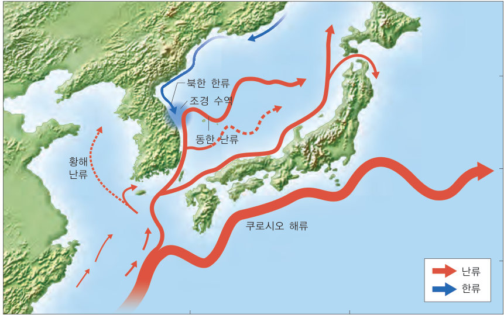
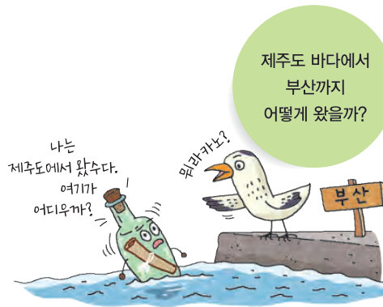
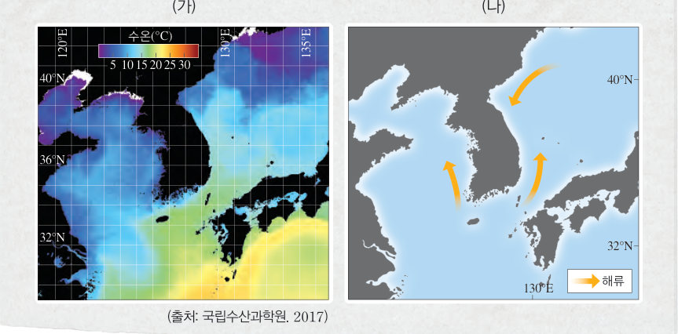

제주도 바다에 빠진 유리병은 어떻게 부산까지 왔을까? 표층 수온 분포와 해류 그림을 비교해 난류와 한류를 구별하고, 해류 모식도에서 유리병을 띄워 보며 동한 난류와 북한 한류의 세기에 따라 조경 수역이 어떻게 움직이는지 알아보자.
제주도 바다에 빠진 유리병과 같은 물건이 부산에서 발견되는 경우가 있다. 이는 해수에 일정한 흐름이 있기 때문이다. 바다에서 일정한 방향으로 나타나는 지속적인 해수의 흐름을 해류라고 한다.

저위도에서 고위도로 흐르는 비교적 따뜻한 해류를 난류라고 하며, 고위도에서 저위도로 흐르는 비교적 찬 해류를 한류라고 한다. 우리나라 주변에는 난류와 한류가 모두 흐르고 있다.
우리나라 주변 난류 중 황해를 흐르는 해류를 황해 난류라 하고, 동해를 흐르는 해류를 동한 난류라고 한다. 두 난류는 태평양을 흐르는 해류(쿠로시오 해류)에서 일부가 갈라져 나온 것이다. 또, 우리나라 주변 한류에는 동해를 흐르는 북한 한류가 있는데, 이는 북쪽에서 남쪽으로 흐르는 해류의 일부이다. 그리고 난류와 한류가 만나는 해역을 조경 수역이라고 하며, 조경 수역에서는 좋은 어장이 만들어진다. 우리나라의 동해에는 동한 난류와 북한 한류가 만나 조경 수역이 형성된다.
| 황해 난류 | |
| 동한 난류 | |
| 북한 한류 | |
| 쿠로시오 해류 |
| ⑴ 황해를 저위도에서 고위도로 흐르는 해류 | |
| ⑵ 우리나라 주변 한류 | |
| ⑶ 동해를 저위도에서 고위도로 흐르는 해류 |
| 평가 기준 | 스스로 평가 |
|---|---|
| 우리나라 주변 해류의 종류와 특성을 설명할 수 있다. | |
| 수온 분포 자료를 해석하여 난류와 한류를 구별할 수 있다. | |
| 조경 수역이 좋은 어장이 되는 까닭에 관심을 가졌다. |